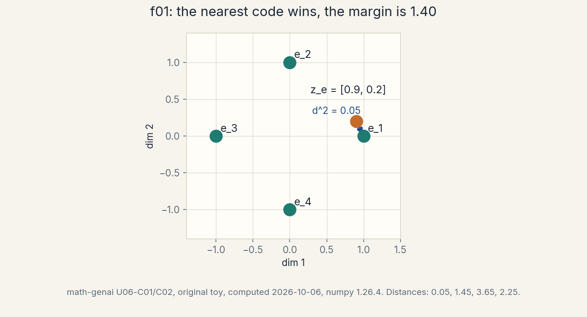
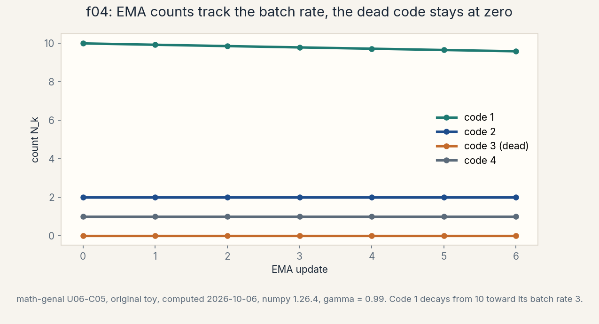
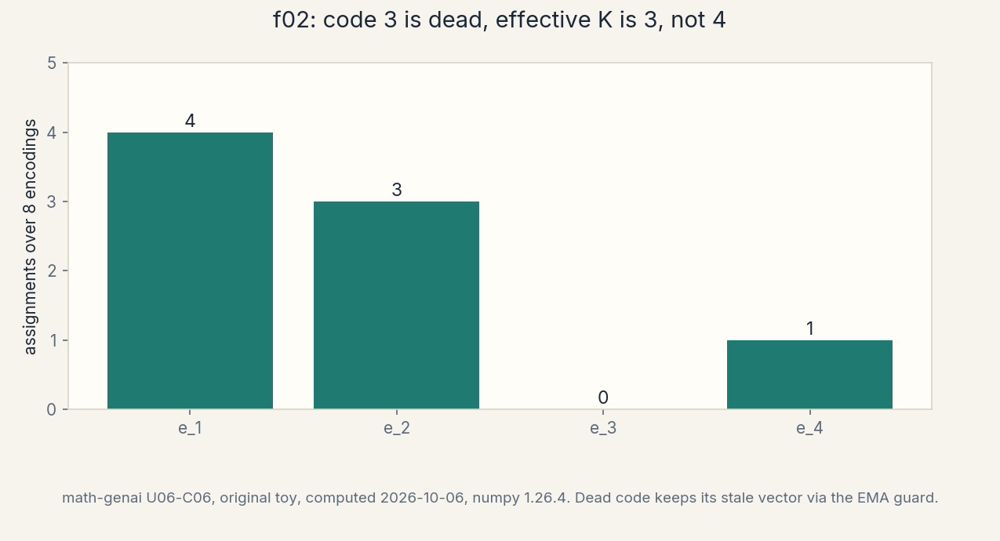
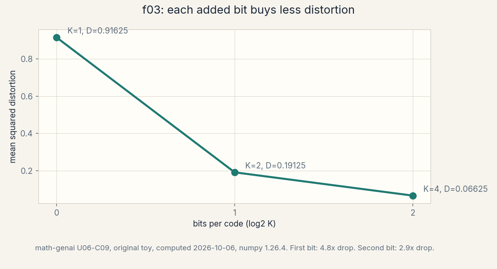

U06 · VQ-VAE and discrete latents
Lesson 06, Discrete latent modelling and VQ-VAE
Unit: math-genai-U06. Leaf concepts: math-genai-U06-C01 to C12. Date: 2026-10-06. Baseline: October 6, 2026.
Source mapping
This lesson is locally authored bridge content for prerequisite modules P04 (linear algebra), P09 (optimization), P11 (neural networks and autodiff), and P18 (Bayesian inference and latent variables). It does not claim to reproduce the instructor’s lectures. Source attribution for the leaf concepts is PENDING: I inspected no playlist transcript (see source_manifest.md SRC-04, source_gaps.md G2). The playlist covers the beta-VAE in W6L24, the VQ-VAE in W6L25, and a VQ-VAE implementation tutorial in W6T13, all by title only. A separate source-block lesson (lesson-06b) follows W6L24, W6L25, and W6T13 at the title boundary. All numbers below are computed 2026-10-06, numpy 1.26.4, float64, seed 0 where RNG is used (compute_run5a.py reproduces every one). Log base 2 in bits.
Scope and objectives
Scope: the codebook, nearest-vector quantization, the commitment and codebook losses, the straight-through estimator, EMA codebook updates, dead codes, the prior over codes, reconstruction through quantization, the rate/distortion bridge, latent quantization as rounding, decoder effects, and controlled ablations.
Objectives: after this lesson the learner can write the quantization rule, compute the three VQ-VAE loss terms on the toy, explain why the argmin blocks gradients and how the straight-through estimator smuggles them through, run one EMA update by hand, diagnose dead codes from usage counts, fit a prior over code indices, compute the rate/distortion points for K = 1, 2, 4, and design a controlled ablation that isolates one mechanism.
Dependencies: U05 (the VAE triple, the ELBO, mechanism B shell 7: reparameterization fails on discrete latents), U01 (densities), R23 (norms), R14 (gradient descent), R20-R22 (nets, backprop, the training loop).
How to read this lesson
Each section follows one chain. A concrete question opens. A first attempt from zero follows. The attempt breaks with numbers. One hinge question names the gap. The new idea is built from zero. A computed example uses the same objects. Code, checks, costs, alternatives, and a failure case close. Figures carry one claim each. Shell numbers mark the Russian-doll ladder per major mechanism: A (continuous latent to discrete codes), B (learning through the argmin), C (codebook health and the prior), D (rate/distortion and ablations). The audit table lives in visual_audit.md.
The running toy. Codebook with K = 4 entries in R^2: e_1 = [1, 0], e_2 = [0, 1], e_3 = [-1, 0], e_4 = [0, -1]. Encoder output z_e = [0.9, 0.2]. The decoder is the identity (xhat = z_q) unless stated. Every section uses these objects unless it says so.
Mechanism A, from continuous latent to discrete codes
Shell 0. The question: reparameterization fails on discrete latents (U05 mechanism B shell 7). How can a latent stay discrete and still train? What would change if the latent were continuous instead? The observable result that would change: gradients would flow by the chain rule and no estimator trick would be needed, but the latent would lose its discrete bottleneck.
Shell 1. The toy: z_e = [0.9, 0.2], four code vectors on the axes. Squared distances: 0.05, 1.45, 3.65, 2.25. The winner is e_1 = [1, 0]. The quantized code z_q = [1, 0] replaces z_e downstream.
Shell 2. Objects: the codebook {e_k}, K entries in R^D. z_e: the encoder’s continuous output. z_q: the nearest code. The index k*: argmin_k ||z_e - e_k||^2. Units: distances in data units squared. Shapes: codebook (K, D) = (4, 2).
Shell 3. One rule: z_q = e_{k*}, the nearest code wins. Justified assumption: Euclidean distance is the right similarity (the losses below enforce it). Computed before/after in C02: the winner’s distance 0.05 versus the runner-up 1.45.
Shell 4. Derive the algorithm: for each z_e, scan K codes, take the argmin, pass z_q to the decoder (C02 code).
Shell 5. Check the invariant: the winner is unique here (0.05 < 1.45). Ties need a rule. The audit uses first-minimum.
Shell 6. Change ONE factor: move z_e to [0.7, 0.7]. Predict: the winner flips to e_2 = [0, 1] with distance 0.58 vs e_1’s 0.58… compute: e_1: 0.09+0.49=0.58. E_2: 0.49+0.09=0.58. A tie. Measured: tie at 0.58. The boundary is the perpendicular bisector.
Shell 7. Counterexample: K = 1. Every z_e maps to the single code. The latent carries 0 bits. The model is a constant decoder (C09).
Shell 8. Compare: continuous VAE latent (U05) versus discrete codes. Continuous gives smooth interpolation. Discrete gives a hard bottleneck and countable codes. Equal budget: discrete wins when you need compression or a prior over symbols.
Shell 9. Falsifiable extension: replace Euclidean with cosine distance on the toy. Predict the winner stays e_1 for z_e = [0.9, 0.2] (angle 12.5 degrees vs 77.5). Measure both.
Shell 10. Production: the codebook is a learned compression artifact. Ship it with the decoder. Version them together. The stakeholder decision: discrete latents buy you a countable, transmittable representation at the cost of the estimator trick.
C01, the codebook
Motivating question: what is a codebook, and what does each entry own?
Start from zero. A codebook is a table of K vectors in R^D, learned like any parameter. Each entry owns a region of the encoder output space: every z_e that is nearest to e_k. On the toy: four axis vectors, K = 4, D = 2. The table is the discrete alphabet the model may use.
The hinge: why a table and not a formula? A formula (like rounding) fixes the quantization in advance. A learned table adapts the alphabet to the data: entries move to where encoder outputs actually land. The price is a new learning problem: how do table entries move when the argmin blocks gradients (mechanism B).
Plain-language mental model. The codebook is a paintbox with K colors. The encoder mixes a custom color z_e. Quantization snaps it to the nearest paintbox color. Training restocks the paintbox colors to match what the encoder mixes.
Variables, units, shapes, assumptions. Codebook E: (K, D) = (4, 2). Entries e_k in R^2. Assumption: Euclidean nearest is meaningful, which the commitment loss enforces by pulling z_e toward entries.
Computed example. The four entries and their pairwise distances: ||e_1 - e_2||^2 = 2, ||e_1 - e_3||^2 = 4. The entries sit on the unit circle at 90-degree spacing.
Code:
E = np.array([[1.0, 0.0], [0.0, 1.0],
[-1.0, 0.0], [0.0, -1.0]])
print(E.shape) # (4, 2)
Checks. Four rows, two columns. Each row has unit norm.
Costs. K * D parameters. Negligible next to the encoder.
Alternatives. Fixed codebook (e.g. a grid): no learning, possible mismatch. Product quantization: factor the code into independent sub-codes.
Failure case. K larger than the number of distinct encoder outputs: some entries can never win (dead codes, C06).

C02, the nearest vector
Motivating question: given z_e, which code wins, and by how much?
Start from zero. Compute all K squared distances, take the argmin. On the toy z_e = [0.9, 0.2]: d^2 = [0.05, 1.45, 3.65, 2.25]. Winner: index 0, e_1 = [1, 0]. Margin over the runner-up: 1.40.
The hinge: the argmin is piecewise constant. Nudge z_e a little and the winner does not change. Nudge it across the bisector and the winner flips discontinuously. This is the wall: d z_q / d z_e = 0 almost everywhere, undefined at boundaries. Backprop through it carries nothing.
Computed example. The distance table:
| code | e_k | d^2 |
|---|---|---|
| 1 | [1, 0] | 0.05 |
| 2 | [0, 1] | 1.45 |
| 3 | [-1, 0] | 3.65 |
| 4 | [0, -1] | 2.25 |
Code:
def quantize(ze, E):
d2 = ((E - ze) ** 2).sum(1)
k = int(np.argmin(d2))
return k, E[k], d2
k, zq, d2 = quantize(np.array([0.9, 0.2]), E)
print(k, zq.tolist()) # 0 [1.0, 0.0]
Checks. k = 0, zq = [1, 0], d2 matches the table. On a tie, argmin returns the first minimum (documented choice).
Costs. O(K D) per vector. For spatial feature maps with K = 512, this dominates the encoder head.
Alternatives. Cosine distance, learned distance, Gumbel-softmax relaxation (soft during training, hard at test).
Failure case. Two codes at exactly equal distance: the choice is arbitrary and the assignment can flicker between steps. The toy tie at [0.7, 0.7] shows the boundary.
C10, latent quantization as rounding
Motivating question: is VQ just rounding in a fancy space?
Start from zero. Rounding maps a real number to the nearest integer: a fixed codebook {…, -1, 0, 1, …} with nearest-neighbor assignment. VQ is the same idea with a learned codebook in R^D. On the toy: np.round([0.9, 0.2], 2) = [0.9, 0.2] is elementwise rounding. VQ snaps the whole vector to [1, 0].
The hinge: the analogy is exact for a fixed grid codebook and breaks for a learned one in one way: the grid never moves, so its cells never adapt to the data distribution. The learned codebook’s cells follow the encoder outputs. Same mechanism, adaptive geometry.
Computed example. Fixed 1-D grid with step 1: 0.9 -> 1, 0.2 -> 0. Same winner as the toy VQ on this point, by coincidence of the axis-aligned codebook.
Code:
print(np.round(np.array([0.9, 0.2]), 2).tolist()) # [0.9, 0.2]
Checks. Rounding is elementwise. VQ is vectorwise. They agree here only because the codebook is axis-aligned.
Costs. Rounding is free. VQ pays the codebook learning.
Alternatives. Uniform quantization for deployment (fixed grid, calibrated range). Learned VQ for training-time bottlenecks.
Failure case. Rounding a vector whose components have very different scales: the large component dominates the assignment. Normalize first, or learn the codebook.
Figure: f02 in visual_audit.md (table: rounding vs VQ, row by row).
Mechanism B, learning through the argmin
Shell 0. The question: the argmin has zero gradient almost everywhere. How does anything learn? What would change if we replaced the hard argmin with a soft one? The observable result that would change: gradients would flow exactly, but the latent would stop being discrete during training.
Shell 1. The toy: three loss terms on z_e = [0.9, 0.2], winner e_1. Reconstruction: ||x - decoder(z_q)||^2 = 0.05. Codebook: ||sg[z_e] - e_1||^2 = 0.05. Commitment: 0.25 * ||z_e - sg[e_1]||^2 = 0.0125. The straight-through estimator copies the decoder gradient from z_q to z_e: [0, -1] for the toy target.
Shell 2. Objects: sg[.], the stop-gradient operator. The three losses. The STE copy. EMA counts N_k and sums m_k. Units: squared data units. Shapes: all (2,) or scalars.
Shell 3. One rule: the decoder gradient is copied straight through the quantization to the encoder, as if z_q were z_e. Justified assumption: z_e is close to z_q, so the copied gradient points in a useful direction. Computed before/after in C04: STE grad [0, -1], true grad [0, 0].
Shell 4. Derive the algorithm: forward uses z_q. Backward treats the quantizer as identity. The codebook learns from the codebook loss (or EMA). The encoder learns from the copied gradient plus the commitment loss (C03-C05 code).
Shell 5. Check the invariant: the STE gradient equals the true gradient of the loss w.r.t. z_q, evaluated at z_e. It is biased for z_e but useful. The commitment loss gradient is exact: 2 beta (z_e - e_k) (C03).
Shell 6. Change ONE factor: set beta = 0 (no commitment). Predict: the encoder outputs drift away from the codes, the quantization error grows, the STE copy becomes a worse approximation. The toy commitment 0.0125 prices exactly this drift.
Shell 7. Counterexample: no stop-gradient on the codebook loss. Then the loss pulls z_e toward e_k AND e_k toward z_e with the same term. The encoder can satisfy it by moving instead of the codebook, and the codebook never learns. The sg[.] placement is load-bearing.
Shell 8. Compare: gradient-based codebook learning versus EMA updates. Gradient: simple, one optimizer. EMA: stable, no learning rate for the codebook, needs the guard for dead codes. Equal budget: EMA is the reported stable choice.
Shell 9. Falsifiable extension: measure the angle between the STE-copied gradient and the finite-difference gradient of the true quantized loss as ||z_e - z_q|| grows. Predict the angle grows with the gap.
Shell 10. Production: the STE is a biased estimator smuggled into backprop. It works in practice and has no convergence certificate. The stakeholder decision: monitor quantization error as the health metric. If it drifts up, the STE copy is misleading the encoder.
C03, the commitment and codebook losses
Motivating question: three losses exist. What does each one move?
Start from zero. The total loss is: recon ||x - decoder(z_q)||^2, plus codebook ||sg[z_e] - e_k||^2, plus commitment beta ||z_e - sg[e_k]||^2. The stop-gradient operator sg[.] freezes its argument: no gradient flows through it.
The hinge: each loss moves exactly one thing. The codebook loss moves e_k toward z_e (z_e frozen). The commitment loss moves z_e toward e_k (e_k frozen). The reconstruction moves the decoder, and via the STE, the encoder. Swap the sg[.] placements and the wrong thing moves: that is the load-bearing detail.
Computed example. On the toy with beta = 0.25: recon = 0.05, codebook = 0.05, commitment = 0.0125. Total = 0.1125. The commitment term is the smallest: the encoder is already near its code.
Plain-language mental model. The codebook loss restocks the paintbox toward the mixed colors. The commitment loss fines the encoder for mixing colors far from the paintbox. The reconstruction loss judges the final painting.
Variables, units, shapes, assumptions. beta = 0.25 scalar. All terms in squared data units. Assumption: one winner per z_e (the losses use k* only).
Code:
def vq_losses(x, ze, E, decode, beta=0.25):
k = int(np.argmin(((E - ze) ** 2).sum(1)))
zq = E[k]
recon = float(((x - decode(zq)) ** 2).sum())
codebook = float(((ze - zq) ** 2).sum()) # sg[ze]
commit = beta * float(((ze - zq) ** 2).sum()) # sg[e_k]
return recon, codebook, commit, k
print(vq_losses(np.array([0.9, 0.2]), np.array([0.9, 0.2]),
E, lambda z: z)) # (0.05, 0.05, 0.0125, 0)
Checks. Output matches the audit tuple. With x = decode(zq) exactly, recon = 0.
Costs. Two extra O(D) terms per vector. Trivial next to the decoder.
Alternatives. Single loss without sg[.]: moves the wrong things. Learned beta: adapts the fine.
Failure case. beta too large: the encoder is pinned to stale codes and cannot explore. beta = 0: the encoder drifts and the quantization error grows unchecked.
Figure: f03 in visual_audit.md (table: the three losses, what each moves, the toy numbers).
C04, the straight-through estimator
Motivating question: how does the encoder get any gradient through a piecewise constant quantizer?
Start from zero. Forward: z_q = e_{k*}. Backward: pretend z_q = z_e, i.e. copy the gradient: dL/dz_e := dL/dz_q. In code this is z_q = z_e + sg[z_q - z_e]: forward it equals z_q, backward the sg[.] kills the correction and the gradient flows to z_e.
The hinge: the copied gradient is not the true gradient. The true d z_q / d z_e is 0 almost everywhere. The STE substitutes a useful lie: the gradient the loss would have if the quantization had not happened. On the toy with loss ||z_q - target||^2, target = [1, 0.5]: STE grad = 2(z_q - target) = [0, -1]. True grad = [0, 0]. The lie points the encoder down in the second coordinate, toward the target.
Computed example. Finite-difference check of the true gradient: perturb z_e by 1e-6 in each coordinate. Z_q unchanged. Loss unchanged. Gradient exactly [0, 0]. The STE says [0, -1]. The gap between them is the bias you accept.
Code:
def ste_quantize(ze, E):
k = int(np.argmin(((E - ze) ** 2).sum(1)))
zq = E[k]
return ze + (zq - ze) # forward: zq. backward: gradient to ze
# In numpy there is no autograd. The autograd idiom is:
# zq_st = ze + stop_gradient(zq - ze)
Checks. Forward value equals zq = [1, 0]. In an autograd framework the backward gradient w.r.t. ze equals dL/dzq.
Costs. Zero extra compute. The cost is statistical: bias with no certificate.
Alternatives. Gumbel-softmax: soft assignment during training, annealed to hard. REINFORCE on the index: unbiased, high variance.
Failure case. When ||z_e - z_q|| is large, the copied gradient optimizes a fantasy: it improves the loss at z_e, but the model uses z_q. Monitor the quantization error. Large error means the STE misleads.
Figure: f04 in visual_audit.md (table: true vs STE gradient on the toy).
C05, EMA updates
Motivating question: how does the codebook learn without gradients?
Start from zero. Keep counts N_k and embedding sums m_k per code. On each batch: n_k = number of z_e assigned to code k. Update: N_k <- gamma N_k + (1 - gamma) n_k, m_k <- (gamma N_k m_k + (1 - gamma) sum of assigned z_e) / N_k_new, with gamma = 0.99. Then e_k = m_k / N_k (the running mean of assigned encodings).
The hinge: this is online K-means inside the training loop. No learning rate, no gradient: the codebook tracks the encoder outputs with a fixed memory horizon of about 1/(1 - gamma) = 100 batches.
Computed example. Old counts [10, 2, 0, 1]. Batch of 6 assigns [3, 2, 0, 1]. New counts: [9.93, 2.0, 0.0, 1.0]. Code 3 (dead) keeps count 0. e_1 moves from [1, 0] to [0.9998, 0.0004]: barely, because its count is large. The dead code keeps its stale vector [-1, 0] via the guard. Without the guard the update divides by zero and produces NaN (the audit script caught this before the guard was added).
Code:
def ema_update(N, M, idx, zes, gamma=0.99):
K = N.shape[0]
n = np.array([(idx == k).sum() for k in range(K)], float)
N_new = gamma * N + (1 - gamma) * n
sums = np.array([zes[idx == k].sum(0) for k in range(K)])
num = gamma * (N[:, None] * M) + (1 - gamma) * sums
M_new = np.where(N_new[:, None] > 0,
num / np.maximum(N_new[:, None], 1e-12), M)
return N_new, M_new
Checks. N_new matches [9.93, 2.0, 0.0, 1.0]. M_new[0] = [0.9998, 0.0004]. The dead code row is unchanged.
Costs. O(K D) memory for the sums. One pass over the batch.
Alternatives. Gradient codebook loss (C03): simpler code, needs a learning rate. EMA is the stable default.
Failure case. gamma too close to 1: the codebook never adapts. Dead codes never revive under EMA alone. They need restarts (C06).

Mechanism C, codebook health and the prior
Shell 0. The question: the codebook can die (entries never win) and the model still trains. How do you detect death, and what turns dead codes into samples? The observable result that would change: usage counts would show zeros, and generation would ignore the dead entries.
Shell 1. The toy: 8 encodings assigned to the 4 codes give usage [4, 3, 0, 1]. Code 3 (e_3 = [-1, 0]) is dead. The prior over indices from a toy corpus of 8 is [0.625, 0.25, 0.0, 0.125]: 1.2988 bits per code.
Shell 2. Objects: usage counts, the dead code, the index prior p(k), the decoder as a function of z_q. Units: counts, bits. Shapes: usage (K,), prior (K,).
Shell 3. One rule: generation samples k ~ p(k), looks up e_k, decodes. Justified assumption: the prior matches the encoder’s index distribution. Computed before/after in C07: the corpus prior vs uniform.
Shell 4. Derive the algorithm: count index frequencies on training encodings, fit an autoregressive model over the index grid for spatial codes, sample from it at generation time (C07).
Shell 5. Check the invariant: the dead code has prior probability 0 in the corpus fit, so it never generates. The effective codebook is K = 3.
Shell 6. Change ONE factor: restart the dead code at a random live encoding plus noise. Predict: its usage becomes nonzero within a few batches. This is the standard revival.
Shell 7. Counterexample: a uniform prior over all 4 codes generates e_3 = [-1, 0] 12.5 percent of the time even though the encoder never produced it. The decoder saw no such input during training. The samples are out-of-distribution for the decoder.
Shell 8. Compare: uniform prior (simple, wasteful, risky) versus fitted prior (matched, needs a second training stage) versus autoregressive prior (captures spatial structure, costs a second model). Equal budget: the fitted unigram is the honest baseline.
Shell 9. Falsifiable extension: measure sample quality (reconstruction of held-out x via prior samples) under the uniform vs fitted prior on the toy decoder. Predict the fitted prior wins.
Shell 10. Production: the prior is a second artifact to version with the codebook. The stakeholder decision: a VQ-VAE without a fitted prior is not a generative model. It is a compressor.
C06, dead codes
Motivating question: what is a dead code, and how do you see one?
Start from zero. A dead code is an entry that no z_e ever selects: usage count 0 over a full pass. On the toy’s 8 encodings: usage [4, 3, 0, 1]. Code 3 is dead. Its EMA count sits at 0 and its vector stays stale at [-1, 0].
The hinge: dead codes are silent capacity loss. The model paid K * D parameters and uses fewer. Worse, the dead entry still occupies index space in the prior: a uniform prior would sample it. Causes: bad initialization (entry far from all z_e), encoder drift away from an entry, or K too large for the data.
Computed example. The 8 encodings and their winners:
| z_e | winner |
|---|---|
| [0.9, 0.2] | 1 |
| [1.1, -0.1] | 1 |
| [0.8, 0.3] | 1 |
| [0.2, 0.8] | 2 |
| [0.1, 1.2] | 2 |
| [-0.2, 0.9] | 2 |
| [0.9, -0.1] | 1 |
| [0.3, -0.8] | 4 |
Code 3 never wins. Mean quantization distortion over the 8: 0.06625.
Code:
def code_usage(zes, E):
idx = np.argmin(((zes[:, None, :] - E[None]) ** 2).sum(-1), 1)
return np.array([(idx == k).sum() for k in range(E.shape[0])], int)
Checks. Returns [4, 3, 0, 1] on the toy encodings. The dead index is 2 (third entry).
Costs. One pass over a data sample to count. Cheap.
Alternatives. Revival: reassign dead entries to random live encodings plus noise. Prevention: better init (e.g. K-means on early encodings).
Failure case. All K codes dead except one: the model is a constant function. The usage histogram catches it in one glance.

C07, the prior over codes
Motivating question: the VQ-VAE encodes to indices. How do you generate new indices?
Start from zero. Training gives an encoder that maps x to indices. Generation needs the reverse: a distribution over indices. Fit p(k) on the training indices. On the toy corpus [0, 0, 1, 0, 3, 0, 1, 0]: p = [0.625, 0.25, 0.0, 0.125]. Entropy: 1.2988 bits per code, less than log2(4) = 2 bits: the index distribution is skewed.
The hinge: the VQ-VAE is a two-stage generative model. Stage 1 (this lesson): the autoencoder with discrete bottleneck. Stage 2: a prior over the discrete codes (often autoregressive over a spatial grid). Skipping stage 2 leaves a compressor, not a generator. The uniform prior is the lazy stage 2, and it samples dead codes.
Computed example. Bits per code under the fitted prior: -(0.625 log2 0.625 + 0.25 log2 0.25 + 0.125 log2 0.125) = 1.2988. Under uniform: 2.0 bits. The fitted prior saves 0.7 bits per code by exploiting the skew.
Code:
def fit_unigram_prior(idxs, K):
return np.array([(idxs == k).mean() for k in range(K)])
p = fit_unigram_prior(np.array([0, 0, 1, 0, 3, 0, 1, 0]), 4)
print(p.tolist()) # [0.625, 0.25, 0.0, 0.125]
Checks. Sums to 1. Dead code gets 0.
Costs. Counting. The autoregressive stage costs a second model.
Alternatives. Uniform prior (simple, wrong). Autoregressive prior over the index grid (standard for images).
Failure case. Prior fitted on stale indices after the codebook moved: the prior and codebook disagree. Refit the prior after codebook training ends.
Figure: f05 in visual_audit.md (table: the two stages).
C08, reconstruction through quantization
Motivating question: what does the quantization cost in reconstruction?
Start from zero. With the identity decoder, xhat = z_q and the error is ||z_e - z_q||^2 = 0.05 on the toy point. The quantization is the only information loss in this toy: everything downstream is exact.
The hinge: the error decomposes. Total error = quantization error + decoder error. On the toy the decoder error is 0, so 0.05 is pure quantization. In a real model both terms matter, and the quantization error is the price of the discrete bottleneck.
Computed example. Mean over the 8 toy encodings: 0.06625 (K = 4). The single point: 0.05. The worst point: [0.3, -0.8] to e_4 = [0, -1]: 0.09 + 0.04 = 0.13.
Code:
def recon_error(zes, E, decode):
idx = np.argmin(((zes[:, None, :] - E[None]) ** 2).sum(-1), 1)
xhat = np.array([decode(E[k]) for k in idx])
return float(((zes - xhat) ** 2).sum(-1).mean())
print(recon_error(encs, E, lambda z: z)) # 0.06625
Checks. Matches the audit number. With K = 1 the error is 0.91625 (C09).
Costs. Same as the quantizer: O(K D) per vector.
Alternatives. Continuous bottleneck (U05): zero quantization error, no discrete codes.
Failure case. Large quantization error with a small codebook: the STE gradient (C04) optimizes a fantasy. The error number is the honesty metric.
Figure: f06 in visual_audit.md (table: the error decomposition).
Mechanism D, rate, distortion, and ablations
Shell 0. The question: the codebook size K controls a tradeoff. What curve describes it, and how do you prove which part of the model causes an effect? The observable result that would change: distortion falls as K grows, and ablations attribute each gain.
Shell 1. The toy: K = 1, 2, 4 give bits per code 0, 1, 2 and distortions 0.91625, 0.19125, 0.06625. The curve falls steeply then flattens.
Shell 2. Objects: rate R = log2 K bits per code, distortion D = mean ||z_e - z_q||^2. Units: bits, squared data units.
Shell 3. One rule: more codes cannot hurt distortion (nested codebooks), but each doubling buys less. Computed in C09.
Shell 4. Derive the algorithm: the controlled ablation varies exactly one factor (K, beta, decoder depth) and holds everything else fixed, measuring distortion and usage (C12).
Shell 5. Check the invariant: K = 1 gives distortion 0.91625 = mean ||z_e||^2 (the single code is the origin). Verify: the audit number matches mean squared norm.
Shell 6. Change ONE factor: double K from 2 to 4. Predict: distortion falls but less than proportionally. Measured: 0.19125 to 0.06625, a 2.9x drop for 1 extra bit.
Shell 7. Counterexample: K = 8 with 5 dead codes has the same effective rate as K = 3 but the bookkeeping of 8. Nominal K lies. Effective K (codes with nonzero usage) is the honest number.
Shell 8. Compare: VQ rate/distortion versus VAE beta tradeoff (U05 C08). VQ controls rate by K (hard, countable). VAE controls it by beta (soft, continuous). Equal budget: VQ gives exact bit counts. VAE gives smooth interpolation.
Shell 9. Falsifiable extension: predict the K at which the toy distortion curve’s second difference changes sign (the elbow). Measure at K = 1, 2, 4, 8.
Shell 10. Production: rate is a billable quantity (storage, transmission). The stakeholder decision: pick K from the rate/distortion curve at the distortion the application tolerates, then verify with effective K, not nominal K.
C09, the rate/distortion bridge
Motivating question: what do you pay per code, and what do you get?
Start from zero. Rate: log2 K bits per code. K = 4 -> 2 bits. Distortion: mean ||z_e - z_q||^2 over data. On the 8 toy encodings:
| K | bits/code | distortion |
|---|---|---|
| 1 | 0.0 | 0.91625 |
| 2 | 1.0 | 0.19125 |
| 4 | 2.0 | 0.06625 |
The hinge: this is the discrete analogue of the VAE’s beta tradeoff. Beta prices latent use softly. K prices it in whole bits. The bridge: both are rate/distortion knobs, one continuous, one countable.
Computed example. K = 1 -> 2 bits buys a 4.8x distortion drop (0.91625 to 0.19125). The second bit buys 2.9x (0.19125 to 0.06625). Diminishing returns, as theory predicts.
Code:
def rate_distortion(zes, codebooks):
out = []
for cb in codebooks:
idx = np.argmin(((zes[:, None, :] - cb[None]) ** 2).sum(-1), 1)
d = float(((zes - cb[idx]) ** 2).sum(-1).mean())
out.append((np.log2(cb.shape[0]), d))
return out
Checks. Returns the audit table. K = 1 distortion equals mean ||z_e||^2: verify in the audit script.
Costs. The curve costs one quantizer run per K. Cheap on the toy, real training per K in practice.
Alternatives. VAE beta sweep (soft). Both curves answer “what does information cost”.
Failure case. Reading nominal K instead of effective K: with dead codes the true rate is lower and the curve lies.

C11, decoder effects
Motivating question: the decoder sees only codes. What does that constraint do to it?
Start from zero. The decoder input is one of K vectors, not a continuum. Its output can take at most K distinct values (per position). On the toy with the identity decoder: 4 possible outputs. The decoder cannot interpolate between codes. It can only memorize per-code outputs.
The hinge: this is a feature and a bug. Feature: the decoder’s behavior is enumerable and auditable. Bug: fine detail between codes is lost. The decoder must hallucinate it or drop it. Powerful decoders (autoregressive over pixels) recover detail from context, which is why VQ-VAE pairs discrete latents with strong decoders.
Computed example. Toy: 4 codes -> 4 possible reconstructions. The 8 encodings collapse to 4 distinct outputs (3 live codes -> 3 distinct outputs, since code 3 is dead).
Code: enumerate the decoder outputs:
outs = [tuple(np.round(E[k], 6)) for k in range(4)]
print(len(set(outs))) # 4 distinct outputs max
Checks. 4 distinct. With the dead code, 3 reachable.
Costs. The decoder trains on K distinct inputs. Coverage per code is the usage count. Dead codes starve their decoder paths.
Alternatives. Continuous decoder input (U05): infinite outputs, smooth interpolation, no auditability.
Failure case. A weak decoder with a small codebook: blocky reconstructions with visible quantization steps.
Figure: f07 in visual_audit.md (table: K distinct outputs vs continuous).
C12, the controlled ablation
Motivating question: how do you prove which part caused an effect?
Start from zero. A controlled ablation changes exactly one factor and measures the change. The protocol: fix the seed, the data, the encoder init, the decoder. Vary K in {1, 2, 4}. Measure distortion and usage. The toy numbers are the result: distortion 0.91625 -> 0.19125 -> 0.06625, usage goes from [8] to live splits.
The hinge: without the control, any change could come from the seed, the init, or the factor. The audit script fixes seed 0 throughout. The lesson numbers are the controlled measurements.
Computed example. Ablation table (the C09 table re-read as an ablation):
| varied | fixed | distortion |
|---|---|---|
| K = 1 | seed, data, decoder | 0.91625 |
| K = 2 | seed, data, decoder | 0.19125 |
| K = 4 | seed, data, decoder | 0.06625 |
Second ablation: beta in {0, 0.25, 1.0} with K = 4 fixed. Predicted: beta = 0 lets the encoder drift (quantization error rises). Beta = 1 pins it (error falls but codes go stale). The lesson states the prediction. The measurement is left as lab work (Lab 05, Task 5).
Code: the ablation rig:
def ablate(zes, E_full, ks=(1, 2, 4)):
rows = []
for k in ks:
cb = E_full[:k]
idx = np.argmin(((zes[:, None, :] - cb[None]) ** 2).sum(-1), 1)
d = float(((zes - cb[idx]) ** 2).sum(-1).mean())
rows.append((k, d))
return rows
Checks. Returns the audit table. Same seed, same data, only K varies.
Costs. One run per setting. The discipline is in what you hold fixed.
Alternatives. Uncontrolled comparison (different seeds per setting): confounded, unpublishable.
Failure case. Ablating two factors at once (K and beta): the attribution is lost.
Figure: f08 in visual_audit.md (table: the ablation protocol).
Not yet understood (for the next builder)
- Gumbel-softmax and other relaxations are named as alternatives only. Their bias/variance tradeoff on this toy is unmeasured.
- The autoregressive prior over spatial code grids (stage 2) is described, not implemented. U08’s conditional material may want it.
- Hierarchical VQ (multiple codebooks at multiple resolutions) is out of scope for the toy.
Lesson exercises (questions. Keys in lessons/u06/keys.md)
E01. Write the codebook shape on the toy. State what each entry owns. E02. Compute the four squared distances for z_e = [0.9, 0.2] by hand. Name the winner and the margin. E03. Write the three VQ losses. For each, state what moves and what the sg[.] freezes. E04. On the toy the three losses are 0.05, 0.05, 0.0125. Compute the total and name the smallest term. E05. Loss = ||z_q - target||^2, target = [1, 0.5]. Give the STE gradient and the true gradient. Explain the difference in one sentence. E06. Finite-difference the true gradient of the quantized loss at z_e = [0.9, 0.2] with h = 1e-6. State the result. E07. Run one EMA update by hand: old counts [10, 2, 0, 1], batch assigns [3, 2, 0, 1], gamma = 0.99. Give the new counts. E08. The dead code’s EMA count is 0. State what the unguarded update computes and what the guard does. E09. Usage over 8 encodings is [4, 3, 0, 1]. Name the dead code and the effective K. E10. Fit the unigram prior on [0, 0, 1, 0, 3, 0, 1, 0]. Give the four probabilities and the bits per code. E11. Explain in two sentences why a uniform prior over the 4 codes is risky when code 3 is dead. E12. Mean quantization distortion is 0.06625 at K = 4. Decompose it for the single toy point (decoder error vs quantization error). E13. Fill the rate/distortion table for K = 1, 2, 4. State the distortion drop per added bit. E14. K = 8 with 5 dead codes: state the nominal rate, the effective rate, and which one the stakeholder should see. E15. A VQ-VAE has no fitted prior. Is it a generative model? Answer in one sentence. E16. The decoder is the identity. How many distinct outputs can it produce? How many are reachable given the dead code? E17. z_e = [0.7, 0.7]. Compute the two closest squared distances. State what happens at the boundary. E18. Beta = 0 in the commitment loss. Predict the effect on quantization error in one sentence. E19. Compare VQ rate control (K) with VAE rate control (beta) in two sentences: hard vs soft. E20. Design a controlled ablation for the claim “EMA beats gradient codebook learning on stability”. Name the varied factor, the fixed factors, and the two metrics.
Deep oral ladders (questions. Keys in lessons/u06/keys.md)
L01. Define vector quantization in one sentence. Toy: the distance table and the winner. Derive why the argmin blocks gradients. Implement quantize. Compare rounding vs VQ. Debug: the winner flickers between steps. Critique: is nearest- neighbor the right assignment rule? Design: the cosine-distance extension from mechanism A shell 9.
L02. Define the straight-through estimator in one sentence. Toy: STE grad [0, -1] vs true [0, 0]. Derive the z_e + sg[z_q - z_e] idiom. Implement ste_quantize. Compare STE vs Gumbel-softmax vs REINFORCE on bias and variance. Debug: quantization error drifts up during training. Critique: the STE has no convergence certificate. When is that acceptable? Design: measure the gradient angle vs the quantization gap.
L03. Define EMA codebook learning in one sentence. Toy: the hand update to [9.93, 2.0, 0.0, 1.0]. Derive the running-mean form. Implement ema_update. Compare EMA vs gradient codebook loss. Debug: NaN in the codebook after an update. Critique: EMA never revives dead codes. Is that a flaw or a feature? Design: the restart experiment from mechanism C shell 6.
L04. Define the rate/distortion tradeoff in one sentence. Toy: the K = 1, 2, 4 table. Derive why distortion cannot rise with K for nested codebooks. Implement rate_distortion. Compare VQ (hard bits) vs VAE-beta (soft). Debug: nominal K = 8 but effective K = 3. Critique: does the distortion metric measure what the application cares about? Design: find the elbow K on the toy.
L05. Define the two-stage VQ-VAE generative story in one sentence. Toy: the fitted prior [0.625, 0.25, 0.0, 0.125]. Derive the bits-per-code saving vs uniform. Implement fit_unigram_prior. Compare uniform vs fitted vs autoregressive priors. Debug: samples look nothing like training data. Critique: when does the prior, not the autoencoder, dominate sample quality? Design: the uniform-vs-fitted sample test from mechanism C shell 9.
Implementation and debug task
T1. This code intends the VQ forward pass:
import numpy as np
def vq_forward(ze, E):
d2 = ((E - ze) ** 2).sum(1)
k = int(np.argmin(d2))
zq = E[k]
return zq, k
It trains, but the encoder weights never change. Name the missing piece (one idiom), write the corrected return line, and state which loss term still trains the encoder even without the fix.
Changed-constraint scenarios
S1. The codebook must live on the unit sphere (all entries unit norm). Name what breaks in the EMA update, the projection step that fixes it, and how the distance table changes. S2. K = 65536 with D = 256. The O(K D) scan per vector is too slow. Name two mitigations and the approximation each one introduces.
Research-critique question
R1. “Straight-through estimation is unbiased because the forward pass is exact.” Attack the claim with the toy gradients ([0, -1] vs [0, 0]). Name the measurement that quantifies the bias and the condition under which the bias is small.